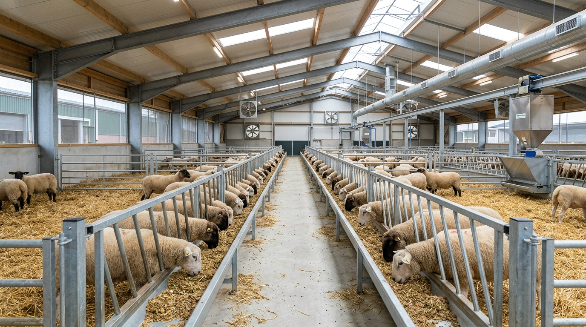

استثمار تراكمي مدروس هندسياً ومالياً يُدار بنموذج إعادة استثمار العوائد الذكي. يبدأ بـ 200 رأس ويتنامى ذاتياً ليصل إلى 354 رأساً، محققاً عائداً إجمالياً 82.48% بإشراف تشغيلي وفني وهندسي شامل 360° من مؤسسة فيدماس.

رؤية متكاملة للإنتاج الحيواني تحول رأس المال إلى أصول حية نامية ومخزون استراتيجي وفق أحدث معايير التغذية والرعاية البيطرية
ينطلق المشروع برأس مال تأسيسي قدره 15,077,888 ريال في الدورة الأولى لشراء وتغذية 200 رأس. ولا يحتاج المستثمر لضخ أي سيولة إضافية إطلاقاً، حيث تُدار الدورات اللاحقة بالتمويل الذاتي التراكمي من عوائد المبيعات حتى يصل القطيع إلى 354 رأساً في الدورة الثالثة.
تتولى مؤسسة فيدماس (FEEDMAS) المسؤولية الإدارية والفنية والميدانية والتسويقية الشاملة. ويحصل الشريك الممول على 70% من صافي الأرباح، بينما تحصل فيدماس على 30% كحافز أداء ونجاح مشترك، مع ضمان استرداد رأس المال بالكامل بنهاية العام.
بيانات تشغيلية دقيقة تعكس الكفاءة العالية لمنظومة التسمين التراكمي خلال دورة سنوية كاملة (12 شهراً)
منظومة إنتاج زراعي وحيواني متكاملة تدير سلسلة القيمة كاملة "من الحقل إلى المزرعة ومن البذرة إلى السوق"
تصنيع الأعلاف المكبوسة، المركزات، والبريميكسات المتخصصة وفق أدق معايير ضبط الجودة المخبرية، لرفع معامل التحويل وتقصير دورة التسمين.
إشراف ميداني هندسي، إدارة الكوادر والعمالة، حوسبة السجلات، الرقابة البيطرية والوقائية الصارمة، والتسويق التجاري للأسواق الكبرى.
تأمين المدخلات العلفية الخضراء والمالئة (السيلاج والدريس) لتحقيق استقرار الإمداد وضمان جودة الخامات وخفض التكاليف التشغيلية.
تتميز مؤسسة فيدماس بالربط العلمي المباشر بين التركيبة العلفية واحتياجات الحيوان الفسيولوجية. هذا التكامل بين مصنع العلف والمزرعة يلغي هوامش الربح الوسيطة، ويضمن أعلى معدل تحويل غذائي بمعدل 4.8 كجم علف لكل 1 كجم زيادة وزنية، مع تقليل نسبة الفاقد والنافق إلى ما دون 2%.
إدارة متخصصة ودائمة مكونة من 5 كوادر تشغيلية بتكلفة شهرية ثابتة (600,000 ريال) لضمان أعلى درجات الانضباط
| المسمى الوظيفي | العدد | نطاق المسؤوليات والمهام التشغيلية التفصيلية |
|---|---|---|
| 1. مهندس التغذية والإشراف الفني العام | 1 (إشراف هندسي) | الإشراف الهندسي الكامل على التغذية وتصنيع الأعلاف والتربية. صياغة وضبط التراكيب العلفية (70% مركز : 30% مالئ). مراقبة معدلات النمو اليومي (180-220 جم/يوم)، وإجراء الوزن الدوري للتحقق من FCR 4.8:1 والتنسيق الشامل. |
| 2. الدكتور البيطري | 1 (إشراف صحي) | الإشراف الصحي والوقائي اليومي للتأكد من خلو القطيع من الأمراض والطفيليات. وضع وتنفيذ برامج التحصينات والتجريع الوقائي وبروتوكولات الاستقبال، والعزل الفوري للحالات المشتبهة لضمان بقاء نسبة النافق دون 2%. |
| 3. المحاسب المالي | 1 | الإشراف الكامل على إدارة السيولة، وحركة الصندوق، والمشتريات والمبيعات. تدقيق ومصادقة كافة النفقات التشغيلية وفق المستندات الرسمية. رفع تقارير دورية (أسبوعية وشهرية)، وإعداد الحسابات الختامية وتصفية الأرباح بشفافية. |
| 4. معلم تصنيع الأعلاف وإدارة المخزون | 1 | التشغيل اليومي لخط تصنيع وكبس الأعلاف (الجرش، الخلط المتجانس، والكبس والتبريد). إدارة مخزون الحبوب والمركزات والبريميكسات، وتطبيق معايير التخزين السليم لمنع التلف، وتأمين الاحتياطي العلفي (10%) باستمرار. |
| 5. مربي وإدارة القطيع (عمال الرعاية) | 2 | المتابعة الميدانية اللصيقة لحالة القطيع على مدار الساعة. تقديم الوجبات العلفية المقررة في أوقاتها المحددة وتوفير المياه النظيفة. التنظيف والتطهير اليومي للحظائر والمساقي، والمساعدة في التحصين، الترقيم، والوزن الدوري. |
خلطة علمية متزنة بنسبة (70% علف مركز مكبوس عالي الطاقة والبروتين : 30% علف مالئ) لتحقيق أقصى نمو وزني
| المرحلة العمرية والإنتاجية للدورة | العلف المركز (جرام/يوم) | العلف المالئ (جرام/يوم) | إجمالي المأكول اليومي (جرام/يوم) | الهدف الفسيولوجي والإنتاجي للمرحلة |
|---|---|---|---|---|
| بداية الدورة (مشترك للأضاحي والتصدير) |
400 جم | 175 جم | 575 جم | أقلمة الكرش، تأسيس الهيكل العظمي والنمو العضلي الأولي بعد الشراء (وزن 12 كجم). |
| نهاية / وسط دورة التصدير (أوزان الكبس حتى 33 كجم) |
830 جم | 360 جم | 1,190 جم | دفع غذائي مكثف للوصول إلى الوزن التسويقي للتصدير (زيادة صافية 21 كجم للرأس). |
| نهاية دورة الأضاحي (أوزان الكبس حتى 24 كجم) |
750 جم | 350 جم | 1,100 جم | تسمين سريع ومكثف لتجهيز الأضاحي بلحم ممتاز خلال شهرين فقط (زيادة صافية 12 كجم). |
مقارنة علمية شاملة بين دورة التسمين التصديرية (5 أشهر) ودورة الأضاحي الموسمية السريعة (شهران)
| البيان الفني والمالي | دورة التصدير (5 أشهر) | دورة الأضاحي (شهران) | المواصفات والتوضيح المعياري |
|---|---|---|---|
| الوزن الابتدائي عند الشراء | 12 كجم | 12 كجم | خراف منتقاة خالية من العيوب والأمراض |
| الزيادة الوزنية المستهدفة | +21 كجم | +12 كجم | بناءً على كفاءة التحويل FCR 4.8:1 |
| الوزن النهائي عند البيع | 33 كجم | 24 كجم | وزن تسويقي قياسي يلائم السوق المستهدف |
| قيمة شراء الرأس الواحد | 31,000 ريال | 26,000 ريال | متوسط أسعار الشراء وفق المواسم |
| تكلفة العلف المركز (شامل 10%) | 21,733 ريال (77.62 كجم) | 13,306 ريال (44.35 كجم) | يمثل 70% من التركيبة العلفية |
| تكلفة العلف المالئ (شامل 10%) | 4,657 ريال (33.26 كجم) | 2,756 ريال (19.01 كجم) | يمثل 30% من التركيبة العلفية |
| الأدوية واللقاحات والمطهرات | 3,000 ريال | 3,500 ريال | برنامج وقائي وتحصينات كاملة لكل رأس |
| إجمالي التكلفة المباشرة للرأس | 60,390 ريال | 45,562 ريال | التكلفة التشغيلية المباشرة (دون العمالة العامة) |
| سعر بيع الكيلوجرام القائم | 2,400 ريال / كجم | 3,300 ريال / كجم | قفزة سعرية ممتازة في موسم الأضاحي |
| إجمالي سعر بيع الرأس الواحد | 79,200 ريال | 79,200 ريال | عائد بيع موحد ومضمون الجدوى لكلا الدورتين |
| الربح التشغيلي المباشر للرأس | 18,810 ريال / رأس | 33,638 ريال / رأس | قفزة ربحية استثنائية في موسم الأضاحي (+78%) |
توسع ذاتي متسلسل يرفع حجم المبيعات من 15.52 مليون ريال إلى 27.48 مليون ريال بدون أي طلب سيولة جديدة
| المرحلة والمدة الزمنية | حجم القطيع (شراء) | الرؤوس المباعة (بعد 2% نافق) | التكلفة المباشرة | أجور الفريق الدائم | إجمالي التكلفة الشاملة | إجمالي المبيعات المحققة | الفائض المرحل |
|---|---|---|---|---|---|---|---|
| الدورة 1: تصدير (5 أشهر) |
200 رأس | 196 رأس | 12,077,888 ريال | 3,000,000 ريال | 15,077,888 ريال (رأس المال التأسيسي) |
15,523,200 ريال | +445,312 ريال |
| الدورة 2: أضاحي (شهران) |
314 رأس | 308 رأس | 14,306,393 ريال | 1,200,000 ريال | 15,506,393 ريال (تمويل ذاتي من د1) |
24,393,600 ريال | +16,807 ريال |
| الدورة 3: تصدير (5 أشهر) |
354 رأس | 347 رأس | 21,377,862 ريال | 3,000,000 ريال | 24,377,862 ريال (تمويل ذاتي من د2) |
27,482,400 ريال | +15,738 ريال |
| الإجمالي السنوي (12 شهراً) | 868 رأس | 851 رأس | 47,762,143 ريال | 7,200,000 ريال | 54,962,143 ريال (إجمالي دوران السيولة) |
67,399,200 ريال | +32,546 ريال |
| إجمالي السيولة النقدية المتوفرة بنهاية العام (مبيعات د3 + الاحتياطي) | 27,514,946 ريال |
| يُخصم: استرداد كامل رأس المال التأسيسي (يعود للممول أولاً) | (15,077,888 ريال) |
| صافي الربح السنوي الإجمالي القابل للتوزيع (عائد 82.48%) | 12,437,058 ريال |
| حصة الشريك الممول من صافي الأرباح (70%) - عائد صافي 57.74% | 8,705,941 ريال |
| حصة مؤسسة فيدماس - الجهة المنفذة (30%) | 3,731,117 ريال |
| 🏆 إجمالي ما يستلمه الشريك الممول بنهاية العام (رأس المال + 70% أرباح) | 23,783,829 ريال |
تتيح للمستثمر محاكاة وتخصيص حجم رأس المال المستثمر واستكشاف العوائد التناسبية المتوقعة بدقة
لماذا يعد هذا المشروع استثماراً آمناً وقليل المخاطر؟ 5 ركائز تضمن حماية رأس المال
محاسب مالي معتمد يرفع تقارير أسبوعية وشهرية تفصيلية، ويصادق على كل عملية شراء وتصريف نقدية بمستندات رسمية تضمن الشفافية والرقابة المستمرة.
إشراف يومي مباشر من مهندس التغذية والدكتور البيطري المقيم يضمن الكشف المبكر لأي اعتلال، مما يحافظ على نسبة النافق أقل من 2% (ضمن الحد العالمي الآمن).
رأس المال مغطى 100% بأصول ملموسة سريعة التسييل (أغنام نامية ذات قيمة سوقية متصاعدة ومخزون أعلاف محفوظ)، مما يحمي رأس المال من أي تقلبات.
إضافة 10% علف احتياطي مدفوع القيمة مسبقاً في الموازنة، وتخصيص 3,000 إلى 3,500 ريال لكل رأس للتحصينات والوقاية يمنع أي عجز أو تكاليف غير محسوبة.
تقاضي مؤسسة فيدماس لأتعابها كنسبة (30%) من صافي الربح الفعلي بعد استرداد رأس المال الكامل يعكس الضمان الأعلى لالتزامنا بتحقيق أقصى ربحية ممكنة.
المدير التنفيذي: المهندس / رمزي محمد يحيى القمادي
المقر الرئيسي: الجمهورية اليمنية – صنعاء – حي النهضة
أرقام الهاتف: 770447966 / 774070875 | واتساب: 738000373 967+
البريد الإلكتروني: Info@feedmas.co | الموقع: www.feedmas.co